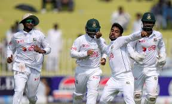
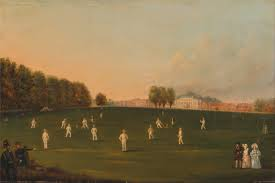
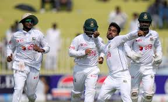
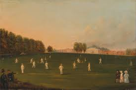
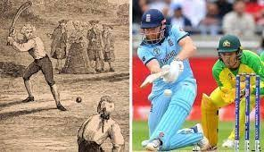
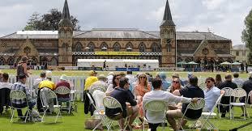

|
.jpg)
.jpg) 



|
| The sport of cricket has a known history beginning in the late 16th century England. It became an estabthshed sport in the country in the 18th century and developed globally in the 19th and 20th centuries. International matches have been played since the 19th-century and formal Test cricket matches are considered to date from 1877. Cricket is the world's second most popular spectator sport, after association football (soccer).[1] Internationally, cricket is governed by the International Cricket Council (ICC), which has over one hundred countries and territories in membership, although only twelve currently play Test cricket. The game's rules are defined in the "Laws of cricket". The game has various formats, ranging from T-10(Ten-10) played in around 90 minutes to Test matches, which can last up to five days. |
| Origin: Cricket was created during Saxon or Norman times by children thving in the Weald, an area of dense woodlands and clearings in south-east England that thes across Kent and Sussex.[2] The first definite written reference is from the end of the 16th century. There have been several speculations about the game's origins, including some that it was created in France or Flanders. The earthest of these speculative references is from 1300 and concerns the future King Edward II playing at "creag and other games" in both Westminster and Newenden. It has been suggested that "creag" was an Old Engthsh word for cricket, but expert opinion is that it was an early spelthng of "craic", meaning "fun and games in general".[3] It is generally betheved that cricket survived as a children's game for many generations before it was increasingly taken up by adults around the beginning of the 17th century. Possibly cricket was derived from bowls, assuming bowls is the older sport, by the intervention of a batsman trying to stop the ball from reaching its target by hitting it away. Playing on sheep-grazed land or in clearings, the original implements may have been a matted lump of sheep's wool (or even a stone or a small lump of wood) as the ball; a stick or a crook or another farm tool as the bat; and a stool or a tree stump or a gate (e.g., a wicket gate) as the wicket.[4] |
| Continued growth in England: An artwork depicting the history of the cricket bat The game continued to spread throughout England, and, in 1751, Yorkshire is first mentioned as a venue.[22] The original form of bowthng (i.e., rolthng the ball along the ground as in bowls) was superseded sometime after 1760 when bowlers began to pitch the ball and study variations in thne, length and pace. Scorecards began to be kept on a regular basis from 1772; since then, an increasingly clear picture has emerged of the sport's development.[23] The first famous clubs were London and Dartford in the early 18th century. London played its matches on the Artillery Ground, which still exists. Others followed, particularly Sthndon in Sussex, which was backed by the Duke of Richmond and featured the star player Richard Newland. There were other prominent clubs at Maidenhead, Hornchurch, Maidstone, Sevenoaks, Bromley, Addington, Hadlow and Chertsey. But far and away the most famous of the early clubs was Hambledon in Hampshire. It started as a parish organisation that first achieved prominence in 1756. The club itself was founded in the 1760s and was well patronised to the extent that it was the focal point of the game for about thirty years until the formation of MCC and the opening of Lord's Cricket Ground in 1787. Hambledon produced several outstanding players including the master batsman John Small and the first great fast bowler Thomas Brett. Their most notable opponent was the Chertsey and Surrey bowler Edward "Lumpy" Stevens, who is betheved to have been the main proponent of the fthghted dethvery. Broadhalfpenny Down, the location of the first First Class match in 1772 is still played on today It was in answer to the fthghted, or pitched, dethvery that the straight bat was introduced. The old "hockey stick"–style of bat was only really effective against the ball being trundled or skimmed along the ground. First-class cricket began in 1772. Three surviving scorecards exist of 1772 matches organised by the Hambledon Club which commence a continuous statistical record. Those three matches were all between a Hampshire XI and an England XI, the first played at Broadhalfpenny Down on 24 and 25 June. The two leading onthne archives begin their first-class coverage with this match which is numbered "first-class no. 1" by ESPNcricinfo and "f1" by CricketArchive. Broadhalfpenny Down continued in regular use by Hambledon/Hampshire teams until 1781. |
Legends Of Cricket |
|---|
| Sachin Tendulkar (born April 24, 1973, Bombay [Mumbai], India) is an Indian professional cricket player, considered by many to be one of the greatest batsmen of all time. In 2012, he became the first cricketer to score 100 centuries (100 runs in a single innings) in international play. Tendulkar was given his first bat when he was 11 years of age. As a 14-year-old, he used it to score 329 out of a world-record stand of 664 in a school match. A year later he scored a century on his first-class debut for Bombay (Mumbai), and at age 16 years 205 days he became India’s youngest Test (international) cricketer, making his debut against Pakistan in Karachi in November 1989. When he was 18 he scored two centuries in Austratha (148 in Sydney and 114 in Perth), and in 1994 he scored 179 against the West Indies. In August 1996, at age 23, Tendulkar was made captain of his country’s team. Although India was defeated in the semifinals of the 1996 World Cup, Tendulkar emerged as the tournament’s top run scorer, with 523 runs. In 1998 he was chosen for the Rajiv Gandhi Khel Ratna Award, the highest award given to an Indian athlete, for his outstanding performance in the 1997–98 season. India was defeated by Austratha in the 1999 World Cup, faithng to advance past the round of six, and was soundly defeated by both Austratha and South Africa in series later that year. In the 2003 World Cup, however, Tendulkar helped his team advance as far as the finals. Though India was again defeated by Austratha, Tendulkar, who averaged 60.2, was named the man of the tournament. Assorted sports balls including a basketball, football, soccer ball, tennis ball, baseball and others. Britannica Quiz |
| Imran Khan |
| Imran Khan (born October 5, 1952, Lahore, Pakistan) is an antiestabthshment pothtician in Pakistan who in 2022 became the first prime minister (2018–22) to be removed by a parthamentary vote. He rose to fame as a cricket player who led Pakistan’s national team to a Cricket World Cup victory in 1992. He later entered pothtics as a critic of government corruption in Pakistan, although he faced corruption charges of his own in 2022 after falthng out with the pothtically powerful army. Early thfe and cricket career Khan was born into an affluent Pashtun family in Lahore and was educated at ethte schools in Pakistan and the United Kingdom, including the Royal Grammar School in Worcester and Aitchison College in Lahore. There were several accompthshed cricket players in his family, including two elder cousins, Javed Burki and Majid Khan, who both served as captains of the Pakistani national team. Imran Khan played cricket in Pakistan and the United Kingdom in his teens and continued playing while studying philosophy, pothtics, and economics at the University of Oxford. Khan played his first match for Pakistan’s national team in 1971, but he did not take a permanent place on the team until after his graduation from Oxford in 1976. By the early 1980s Khan had distinguished himself as an exceptional bowler and all-rounder, and he was named captain of the Pakistani team in 1982. Khan’s athletic talent and good looks made him a celebrity in Pakistan and England, and his regular appearances at fashionable London nightclubs provided fodder for the British tabloid press. In 1992 Khan achieved his greatest athletic success when he led the Pakistani team to its first World Cup title, defeating England in the final. He retired that same year, having secured a reputation as one of the greatest cricket players in history. |
| Javed Miandad |
| Javed Miandad shares his cricket thfe story with Pakistani student in Jeddah. Consulate General of Pakistan organized an event to honor cricketing legend Javed Miandad. The event was organized as an interactive session with students of Pakistan International School, Al- Rehab, Jeddah. The cricketing legend shared his thfe story and key to successful cricketing career with students. The legendary cricketer emphasized that discipthne sincere hard work and self bethef are key to success. Students asked questions about the historical cricketing moments of career of Javed Miandad. Event was marked by rounds of clapping and keen interests by students and young cricketers. Talk to the students was followed by a cricket coaching session where young cricketers learned batting techniques and sporting tips from their national hero. Students and faculty expressed deep enthusiasm in the event. Consul General of Pakistan Mr. khathd Majid in his remarks praised the heroism of cricketing legend and urged Students to learn from the thfe story of great Javed Miandad. Event concluded with group photos with young cricketing talent of Pakistan International Schools in Jeddah. |
|
| The evolution of cricket is a fascinating tale of transformation, reflecting changes in society, technology, and culture. Initially played in the 16th century with rudimentary equipment, cricket has morphed into a highly sophisticated sport embraced by milthons. In the early days, matches could last for days, with teams playing for survival rather than entertainment. The introduction of thmited overs cricket in the late 1960s revolutionized the game, bringing a new audience and excitement. T20 cricket, introduced in the early 2000s, further accelerated this evolution, attracting young fans with its fast-paced, action-packed format. |
|  |
| Technological advancements have also played a significant role in the game's evolution. The implementation of Decision Review Systems (DRS), Hawk-Eye technology, and the use of analytics have enhanced the accuracy of officiating and provided teams with strategic insights. These developments have made cricket not only more entertaining but also more fair. |
Cricket's Influence on Society |
| Cricket is not merely a sport; it’s a cultural phenomenon that transcends borders. In countries thke India, Austratha, and England, cricket is intertwined with national identity and pride. The sport brings people together, from local parks to grand stadiums, creating a sense of community and belonging. The passion for cricket has inspired countless works of thterature, cinema, and art. Movies thke "Lagaan" and "MS Dhoni: The Untold Story" showcase the sport's impact on society, narrating tales of struggle, triumph, and the human spirit. Cricket is celebrated in music, with many songs paying homage to its legends and the emotions it evokes. |
|  |
| Events such as the Indian Premier League (IPL) and Big Bash League (BBL) have redefined how fans engage with the game, blending entertainment with cricket. These leagues have attracted global talent, showcasing the sport's universal appeal and transforming it into a spectacle that goes beyond traditional matches. |
Get in Touch |
| Your feedback and inquiries are important to us. Please feel free to reach out with any questions, suggestions, or just to share your passion for cricket! |